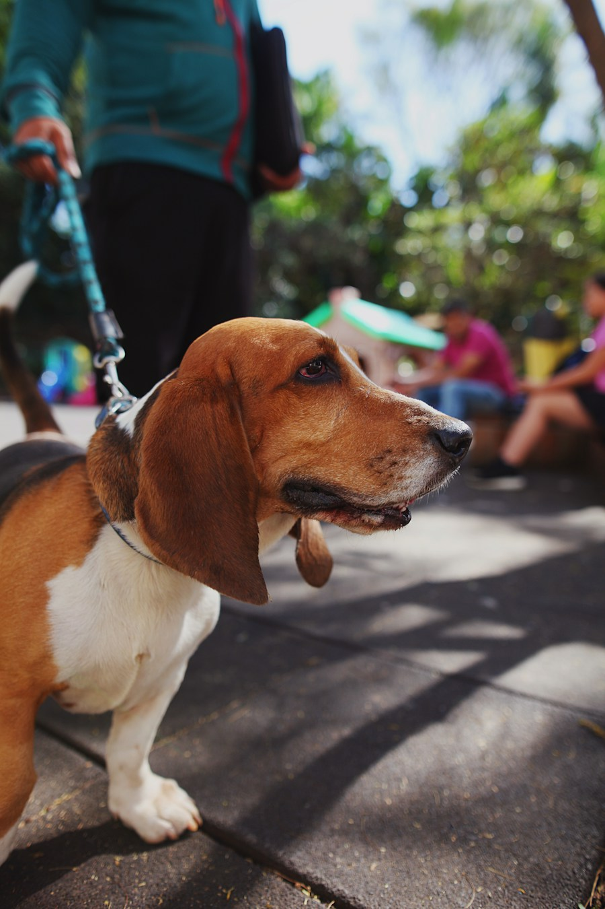

Compañeros de vida

Es una raza originaria de Inglaterra, criada principalmente para rastrear animales.
Es de tamaño pequeño a mediano, tiene orejas largas y un olfato excelente.
Es curioso, alegre, sociable y disfruta explorar su entorno.
Necesita alimentación equilibrada, revisión de sus orejas y paseos frecuentes.
Le gusta caminar, buscar objetos y seguir diferentes olores.
Conesa a màs perros